BRAND
IDENTITY
GUIDELINES
NARU studio CI 가이드라인 및 로고 사용 규정
01
주요 로고
PRIMARY LOGO
PRIMARY WORDMARK
부산에서, 취향이 닿는 곳
NARU studio는 부산의 덕질 명소, 전시, 팝업, 캐릭터 숍과 팬 문화를 발견하고 연결하는 콘텐츠 스튜디오입니다. 이어지는 곡선은 부산의 바다와 나루, 사람과 취향의 연결을 상징하며 A의 재생 모티프는 영상 콘텐츠를 나타냅니다.
로고의 비율과 구성 요소를 임의로 변경하지 말고 지정된 원본 파일을 사용합니다.
02
컬러 팔레트
COLOR PALETTE03
로고 여백 규정
CLEAR SPACE로고 주변에는 시각적 명확성을 위해 최소 1x 이상의 보호 여백을 확보합니다.
04
최소 크기 규정
MINIMUM SIZE디지털 DigitalMin H: 48px
인쇄 PrintMin H: 15mm
가독성 유지를 위해 정의된 최소 크기 이하로 사용하지 않습니다.
05
로고 사용 금지 사항
INCORRECT USAGE / DON'TS비율 및 형태 왜곡
로고 각도 임의 변경
규정 외 컬러 적용
낮은 대비 적용
효과 및 그림자 적용
복잡한 이미지 배경 배치
06
배경 대비 및 활용
BACKGROUND USAGE07
타이포그래피
TYPOGRAPHY영문 대제목과 핵심 키워드에 사용합니다. 자간은 좁게, 행간은 0.9–1.0 범위로 유지합니다.
한글 제목과 카드 제목에 사용합니다. 굵기는 700–800, 행간은 1.2–1.35를 권장합니다.
본문은 400–500, 행간은 1.7–1.9로 사용하고 캡션은 본문보다 한 단계 작게 설정합니다.
DESIGN
통통한 글자와 경쾌한 기울기로 네 친구의 발랄함을 담았습니다. 하늘빛·보랏빛·분홍빛 컬러와 반짝이는 별이 취향을 발견하는 설렘을 더합니다.
CONCEPT
서로 다른 취향이 나루를 중심으로 만나는 이야기. ‘나루와 취향들’이라는 이름으로 각자의 좋아하는 마음을 하나의 세계로 연결합니다.
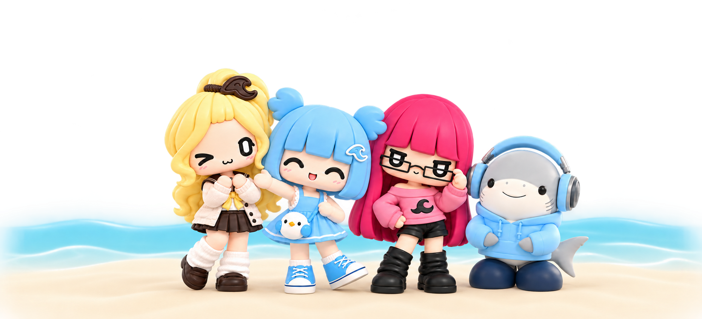
좋아하는 마음이 만나는 곳.
부산의 문구 숍과 전시, 일상 속 작은 수집 공간.
취향이 다른 네 친구가 발견하고, 몰입하고, 간직하고, 함께 웃습니다.
NARU STUDIO · OFFICIAL CHARACTER
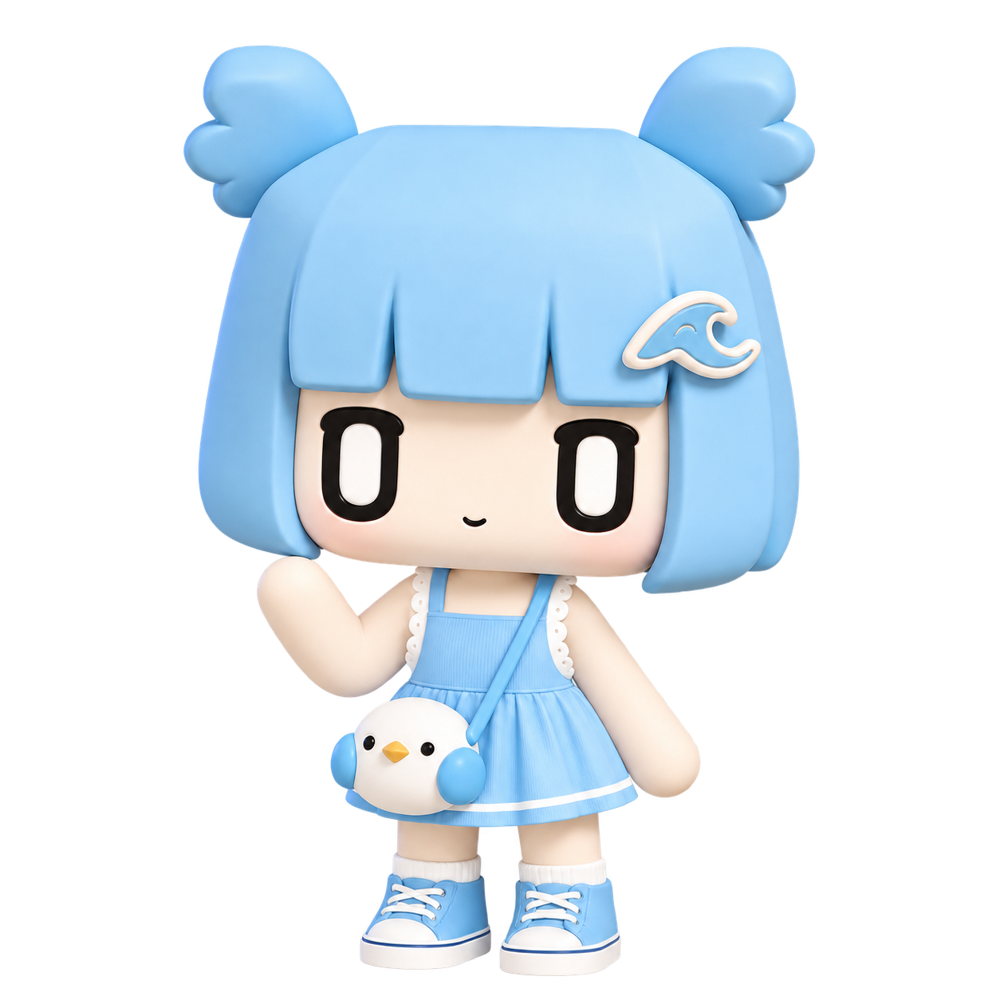
취향을 발견하는 안내자
나루 NARU
호기심이 먼저 움직이고, 발견한 즐거움을 친구에게 건네는 탐색가.
- 좋아하는 것
- 신작 게임 · 게임 행사 관람 · 친구의 취향
- 디자인 포인트
- 파도핀 · 날개 묶음 · 새 가방
01
캐릭터 삼면도
CHARACTER TURNAROUND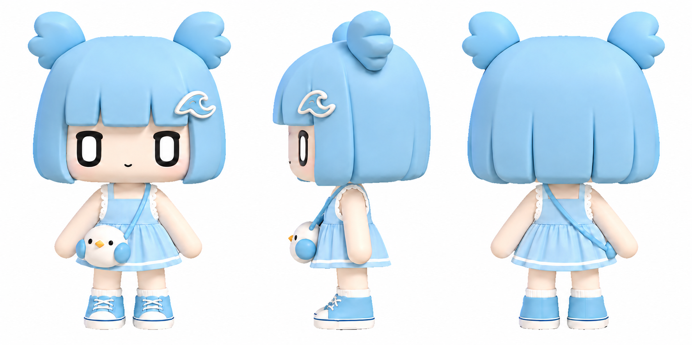
02
표정
EXPRESSIONS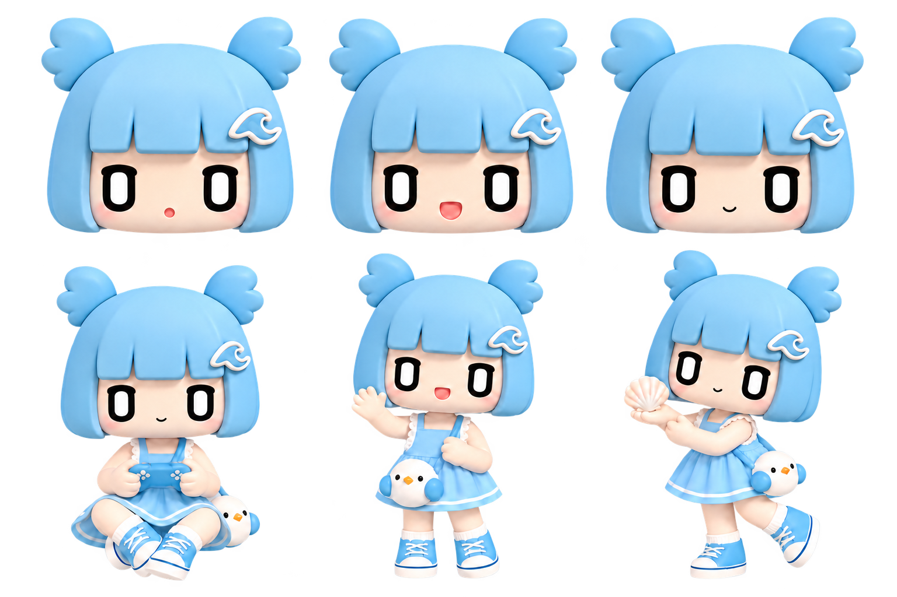
03
취향이 담긴 포즈
POSES04
컬러 팔레트
CHARACTER COLORS
NARU STUDIO · OFFICIAL CHARACTER
몰입을 행동으로 옮기는 친구
달리 DALLI
겉으로는 담담하지만, 마음에 드는 세계와 작은 디테일을 끝까지 파고듭니다.
- 좋아하는 것
- 게임 설정 · 숨겨진 수집 요소 · 작품의 디테일
- 디자인 포인트
- 사각 안경 · 분홍 긴 머리 · 검정 부츠
01
캐릭터 삼면도
CHARACTER TURNAROUND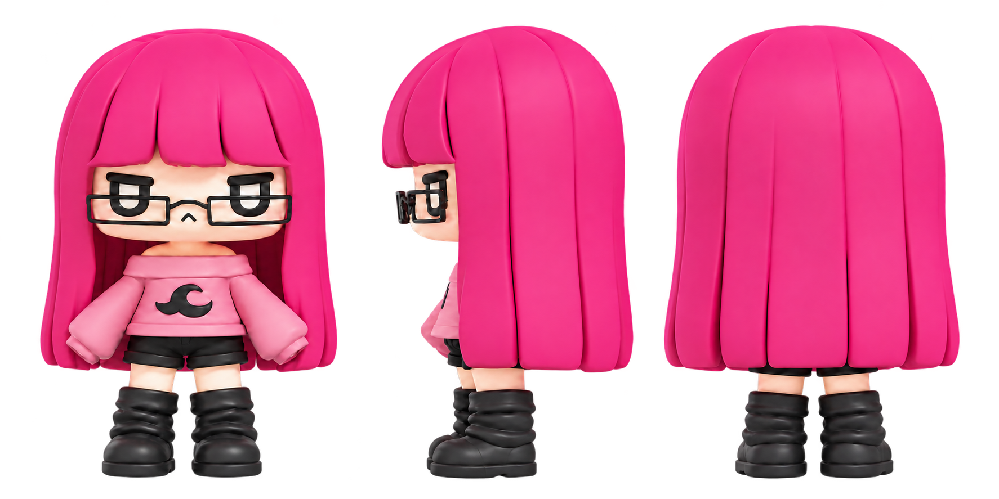
02
표정
EXPRESSIONS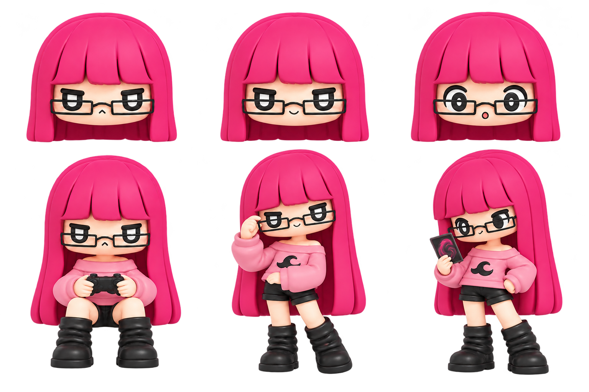
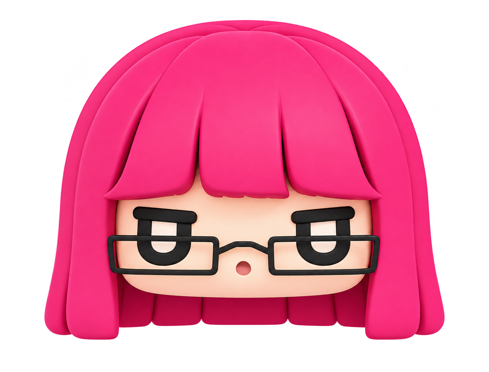
03
취향이 담긴 포즈
POSES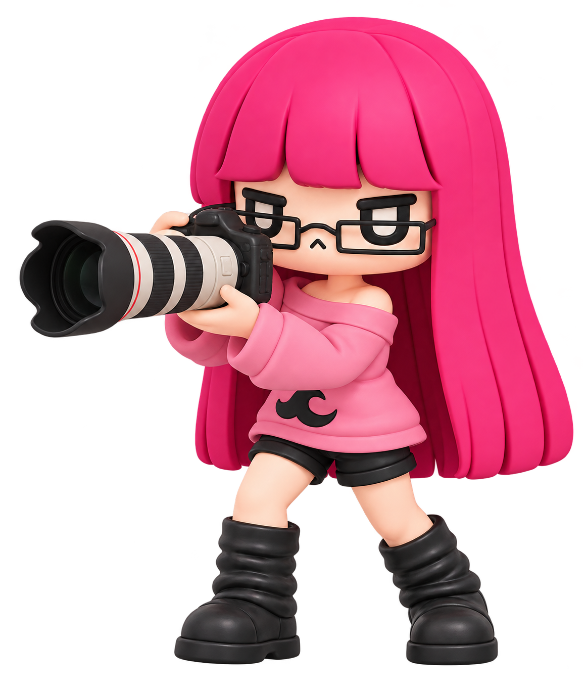
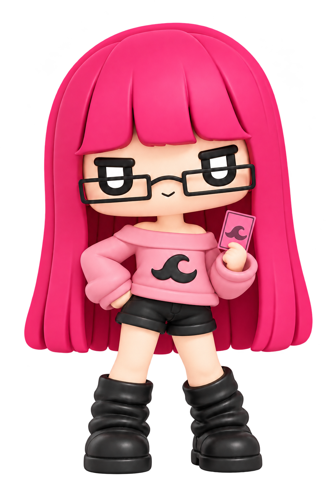
04
컬러 팔레트
CHARACTER COLORS
NARU STUDIO · OFFICIAL CHARACTER
좋아하는 순간을 간직하는 친구
모래 MORAE
작은 예쁨에 반응하고, 아껴 둔 물건에서 오래 남은 추억을 꺼내 봅니다.
- 좋아하는 것
- 스티커와 리본 · 다이어리 · 작은 선물
- 디자인 포인트
- 갈색 파도 장식 · 노란 리본 · 크림 카디건
01
캐릭터 삼면도
CHARACTER TURNAROUND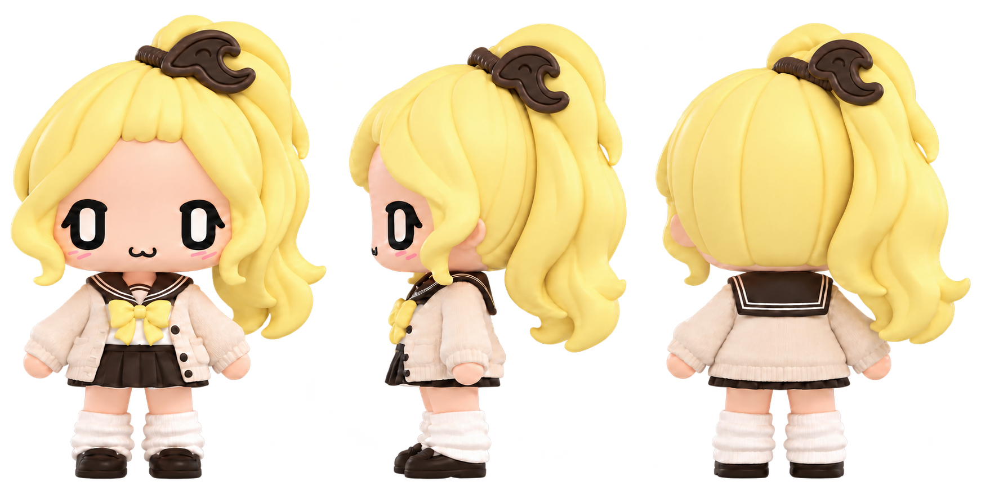
02
표정
EXPRESSIONS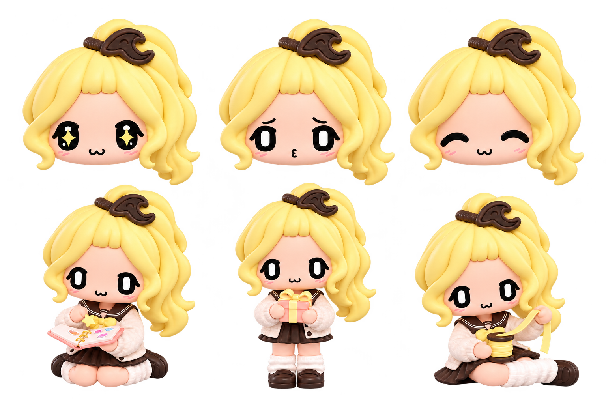
03
취향이 담긴 포즈
POSES04
컬러 팔레트
CHARACTER COLORS
NARU STUDIO · REIMAGINED CHARACTER

일상의 리듬을 만드는 부산 친구
부크 BUKE
느긋하게 듣고 짧게 반응하며, 친구들과 쉬어 갈 리듬을 만듭니다.
- 좋아하는 것
- 산책 · 헤드폰으로 듣는 음악 · 함께 쉬는 시간
- 디자인 포인트
- 하늘색 헤드폰과 후드 · 볼 아가미 · 상어 꼬리
01
캐릭터 삼면도
CHARACTER TURNAROUND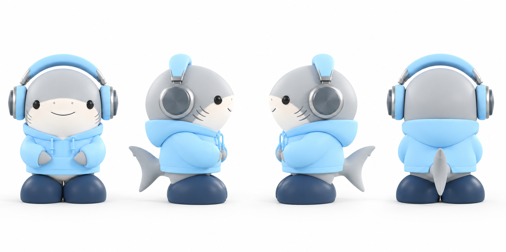
02
표정
EXPRESSIONS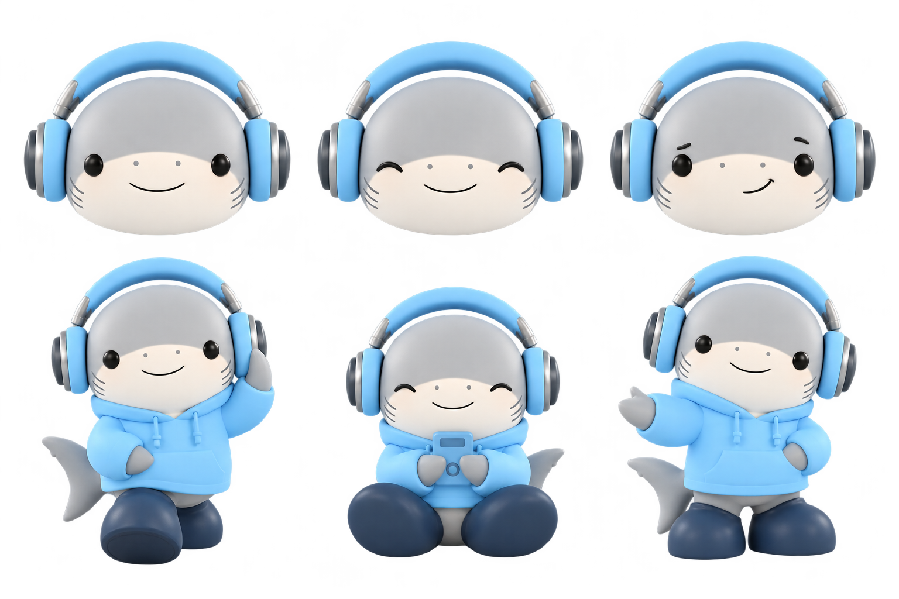
03
취향이 담긴 포즈
POSES04
컬러 팔레트
CHARACTER COLORS03
캐릭터 활용 규정
CHARACTER USAGE표정과 장식이 보이도록, 전체 실루엣을 잘림 없이 배치합니다.
원화의 색과 외곽선이 선명하게 보이는 배경을 선택합니다.
얼굴과 몸의 비율을 유지하고, 글자는 이미지 밖에 배치합니다.
파도핀, 안경, 리본, 헤드폰을 보존하고 임의 색상·효과를 더하지 않습니다.